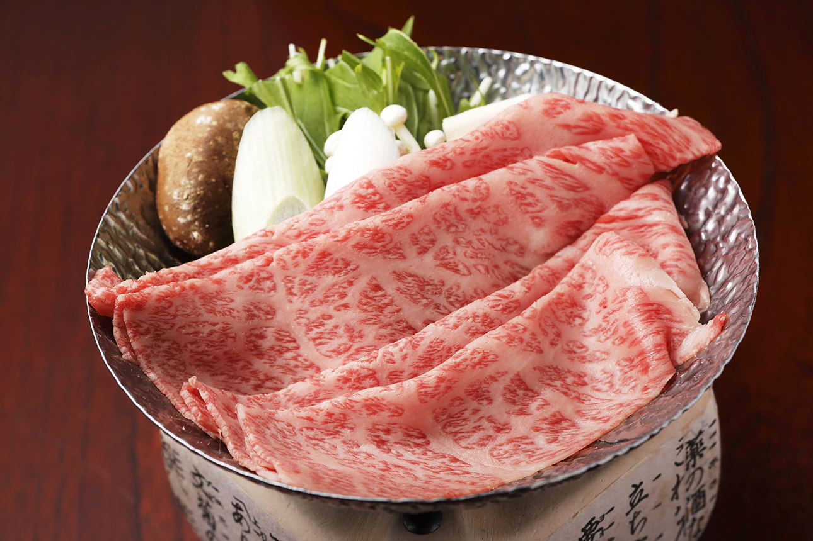

How to Travel to Takayama Takayama is located in the middle of Japan. The map above shows where it is. Below are instructions on how to get there.
Get to tokyo
From tokyo
Once you are in Tokyo there are two ways to get to Takayama, I have looked for the cheapest and fastest ways to get there:
The train which takes 4h 43m, and costs $90, or ¥13612
The bus which takes 6h 55m, and costs $50 or ¥7500
In Takayama
You have made it! Scroll down to see fun things to do!
What to do Here I have listed a few places for you to see. Below are links to hotels, restaurants, and tourist attractions
Best foods to try

Hida-gyu is a type of beef, it is made with Hida-gyu beef, Salt, Pepper, Soy sauce, Garlic, Vegetables, Rice, Sake, Mirin, and Sesame seeds/oil. It is cooked at so very high-class restaurants and is a very yummy food.
Mitarashi dango are skewers made of Mochiko (glutinous rice flour), water, sugar, soy sauce, mirin, and cornstarch, they are very good and I recommend them on your trip.
Hotels/Inns
Here is a link to some nice hotels, they are cheap and accept USD
The Wat Hotel , is $45 or ¥6670 a night. They have a seven minute walk from the takayama train station (for thses who took the train this is nice). They also offer hot springs and a spa.
The FAV Hotel , is $60 or ¥9100 a night.
Fun Facts!
Takayama is a city in Japan. The language there is Japanese. Most people there don't speak English so if you are planning to go there it is best to know Japanese.
In Hiragana Takayama it is spelled たかやま.